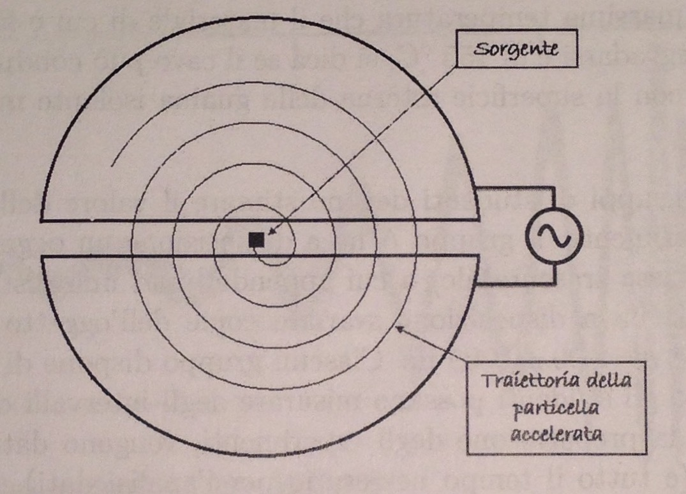

arna19981 set 2017, 22:42
Il ciclotrone fu inventato nel 1930 da Ernest Orlando Lawrence per accelerare gruppi di protoni usando piccole differenze di potenziale. Il suo schema di funzionamento è il seguente: i protoni girano all'interno di due elettrodi cavi a forma di D in presenza di un campo magnetico diretto verticalmente rispetto al piano del moto. Sotto l'azione del campo magnetico le particelle percorrono orbite semicircolari e ad ogni mezzo giro vengono accelerate in un tempo molto breve dalla differenza di potenziale tra gli elettrodi. Ad ogni mezzo giro la tensione applicata agli elettrodi viene invertita, in modo che i protoni vengano accelerati a ciascun passaggio. Questi percorrono dunque orbite di raggio via via crescente per poi essere estratti da un deflettore una volta raggiunto il bordo del dispositivo (vedasi lo schema allegato).
- Dimostrate il principio fondamentale del funzionamento del ciclotrone (valido nel limite di velocità non relativistiche), ovvero che il periodo di rotazione dei protoni non dipende dal raggio della loro orbita. Questo permette di accumulare gruppi di protoni all'interno del ciclotrone che girano in sincronia su orbite di raggio diverso invertendo la tensione degli elettrodi con una frequenza costante.
- Assumendo che i protoni vengono iniettati nel ciclotrone con una velocità iniziale e una distanza dal centro (raggio dell'orbita) molto piccoli rispetto ai corrispondenti valori finali, determinare l'energia cinetica \(E_K \) che le particelle hanno quando vengono estratte in funzione della loro massa e carica elettrica e dei parametri della macchina.
- Ottimizzate il progetto di un ciclotrone con \(E_K = 2 \, MeV\) tenendo conto del suo costo di realizzazione. Assumete che una parte del costo aumenti in modo proporzionale all'area del magnete e una restante parte scali come \(B^3\), dove \(B\) è l'intensità del campo magnetico. Determinare i parametri ottimali della macchina sapendo che un ciclotrone con \(B = 1 \,T\) e raggio \(R_1 = 100 \, cm\) costa il doppio di uno con lo stesso campo magnetico e raggio \(R_0 = R_1 /2\). Dati utili: \(1\, MeV = 1, 6 \cdot 10^{-13}\,J\), \(m_p = 1, 7 \cdot 10^{-27}\, kg = 940 \, MeV/c^2\) (massa del protone), \(q = 1,6 \cdot 10^{-19}\,C\) (carica elettrica del protone).
-
Allegati
-

- ciclotrone.jpg (161.12 KiB) Visto 6571 volte
arna19982 set 2017, 18:49
Il procedimento mi sembra tutto corretto :)
Nel punto 3 per trovare il minimo anche io al test ho usato AM-GM, ma eventualmente si può derivare, che credo sia più veloce e apprezzato dai fisici :lol: :lol:
arna19982 set 2017, 23:32
Dall'energia cinetica \(R^2=\dfrac{2 E m}{q^2 B^2}\), sostituendo in \(C\) si trova
\(C(B)=B^3+2\dfrac{2 E m}{q^2 B^2}\) da cui per il minimo
\(C'(B)=3B^2-\dfrac{8 E m}{q^2 B^3}=0\) e quindi
\(B=\sqrt[5]{\dfrac{8 E m}{3q^2 }}=0,577\, T\) e \(R=0,379 \, m\).